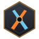

Arena (juego original)
Juego de lucha propio de esta web, con personajes originales: no es MK9. Los dos jugáis desde el navegador, sin Steam, con netcode con rollback. Elegid «Arena» en la sala.

MK9 LobbycompanionMortal Kombat 9 · Komplete Edition · 1 contra 1 online
Crea una sala privada, invita a tu rival con un código o un enlace y comprobad la conexión antes de pelear. El juego se ejecuta en vuestros PCs; esta web reúne a los jugadores, mide la latencia real entre vosotros y os guía para conectar.
Obtendrás un código de 6 caracteres y un enlace para tu rival.
Resumen honesto de lo investigado (octubre de 2026). Esta web os conecta y os guía; el combate ocurre fuera del navegador.
Juego de lucha propio de esta web, con personajes originales: no es MK9. Los dos jugáis desde el navegador, sin Steam, con netcode con rollback. Elegid «Arena» en la sala.
MK9 es un programa de Windows (Unreal Engine 3, Direct3D). Ni WebAssembly ni WebGL pueden ejecutarlo sin su código fuente, que no es público. No existe ningún proyecto que lo consiga.
Cada uno abre su copia de Steam con el botón de la sala y usáis el online del juego. Steam retiró MK9 de su tienda en 2020; un jugador informó hace menos de un año en el foro de Steam de que el online aún funciona. No lo hemos comprobado.
La versión de PS3 en el emulador RPCS3 con su red RPCN, usando un volcado de vuestros propios discos. No hay constancia de que MK9 funcione online así.
Steam Remote Play Together (el juego figura con esa función en las categorías de Steam) o Parsec: el anfitrión ejecuta el versus local y el amigo recibe la imagen y envía sus mandos. Solo el anfitrión necesita el juego.
Sala privada
Esperando a tu rival para medir la latencia entre vuestros equipos.
Teclado: A/D moverse · W saltar · S agacharse · U puñetazo · J o K patada · L bloquear · I proyectil. Agachado: puñetazo = gancho, patada = barrido. En el aire: patada. Mando: cruceta, X puñetazo, A/B patada, RT bloquear, Y proyectil. Puedes cambiarlos en «Controles».
Necesitas Python 3 (python.org, marca «Add python.exe to PATH»). Abre el archivo descargado con doble clic y deja su ventana abierta. Si el navegador pregunta si esta web puede acceder a tu red local, pulsa «Permitir».
El mando del invitado llega tal cual (distribución Xbox). Con teclado: ↑↓←→ cruceta · 1 = X · 2 = Y · 3 = A · 4 = B · Bloquear = RT · Agarre = LB · Cambiar postura = RB · Relevo = Back · Pausa = Start. Si en MK9 no coinciden, cámbialos en Opciones → Controles para el jugador 2.
Pulsa tus botones: tu rival los ve en tiempo real. Sirve para comprobar mandos y latencia, no controla el juego.